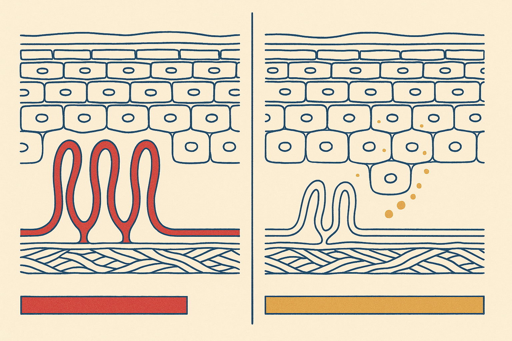
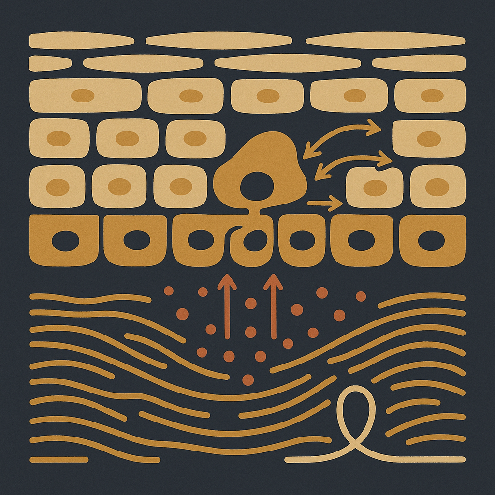
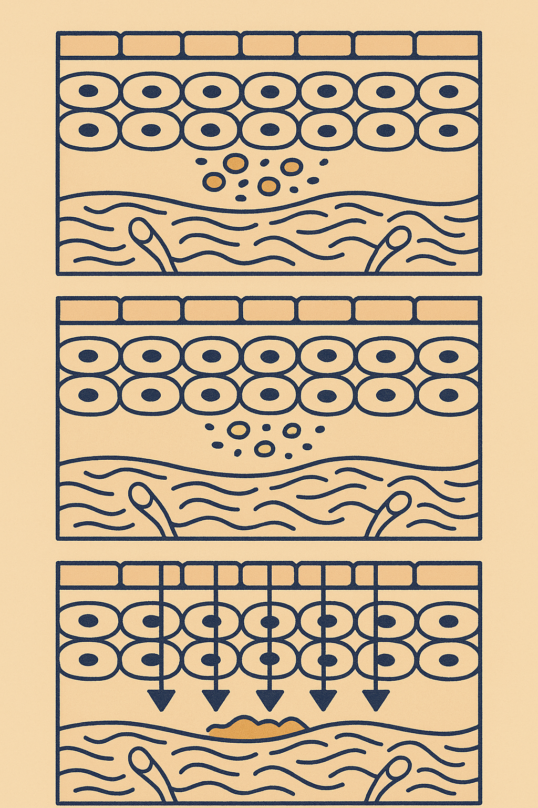

Review below. Reply approve to publish the Facebook post, or tell me edits.

The spot itself was gone in about a week. The mark it left is still sitting there in October, in the same place, slightly faded and refusing to leave. That is not a sign that something has gone wrong. It is the ordinary sequence: the blemish is the event, and the mark is the paperwork the skin files afterwards.
There are two kinds of paperwork, and they are not the same thing. Red or purple marks are a circulation story. Tan or brown marks are a pigment story. Two marks. Two clocks. Most people treat both with the same routine, and the approach that suits one often prolongs the other.
The short version, worth saving:
The clinical name is post-inflammatory erythema, and it means what it sounds like: redness left over after inflammation.
During a breakout, the skin floods the area with blood. That is not a malfunction, it is delivery: immune cells, oxygen and repair materials all arrive through the capillary loops that sit in the papillary dermis, the shallow layer just under the epidermis. Under that pressure the loops dilate, and some of them are damaged and left leaky or slightly remodelled. Vessels rebuild themselves slowly, and until they do, more blood than usual keeps arriving at a small patch of skin, which is exactly what you are seeing.
The plain version: the skin has not stained. It is still holding the door open for blood flow that was genuinely needed during the repair, and it has not got around to closing it.
Post-inflammatory erythema fades on its own. Weeks to a few months is a fair expectation for most people, and the timeline is not really under your control. It is more common on lighter skin, and it is the reason a face can look blotchy and pink long after it is technically clear.
Post-inflammatory hyperpigmentation is a different mechanism entirely.
Inflammatory signalling does more than dilate vessels. It also reaches the melanocytes sitting along the base of the epidermis, the cells that manufacture melanin, and switches production up. Those melanocytes hand melanin granules to the keratinocytes above them, and keratinocytes are on a conveyor belt: they mature, move upward, and eventually shed from the surface. Pigment that lands in the epidermis therefore leaves the way skin cells leave, gradually, from the top.
Depth is what decides everything. If the inflammation stayed shallow, the pigment sits in the epidermis and travels out with normal renewal, commonly over some months. If the inflammation went deep enough to disturb the basement membrane, the boundary between epidermis and dermis, pigment can drop through into the dermis, where there is no conveyor belt to catch it. Immune cells hold it, and it is held for considerably longer. Anyone quoting you one confident number for how long a brown mark takes is guessing, because they cannot see which of those two things happened.
That is also why deeper, more inflamed lesions leave the most stubborn marks, and why the inflammation, not the spot, is the thing worth minimising.
You can usually tell which mark you have without touching it.
Look at the mark straight after a hot shower, a workout, or a glass of wine, then look at it again once you have cooled down. A vascular mark responds to heat and flushing: it deepens and goes more obviously red or purple when circulation increases, and calms as you cool. A pigment mark does not care. It looks the same warm or cold, because the colour is a granule sitting in a cell, not blood in a vessel.
The cheaper second check is a photo. Same window, same time of day, same distance, once a fortnight. Marks move too slowly for daily bathroom-mirror assessment to be honest, and a fortnightly photo set is the only way most people ever see that something is actually changing.
Ultraviolet exposure. Melanocytes that have been switched on by inflammation are already in production mode, and UV is the signal that keeps them there. Every unprotected day re-triggers melanin synthesis in exactly the patch that is trying to clear, which is how a mark can look no better in February than it did in December despite everything you have been applying. Plainly: daily sun protection does more for a brown mark than any serum or device will. It is the single highest-return habit in this entire article.
Picking and squeezing. It extends the inflammatory phase and can push contents deeper into the dermis, which is the exact mechanism that decides whether the pigment lands somewhere shallow and shiftable or somewhere it will stay. The mark tracks the inflammation, not the blemish.
Aggressive correction. Scrubs, high-strength acids stacked nightly, several actives introduced at once. Skin that is making pigment because of inflammation does not benefit from fresh inflammation, and irritated skin is often the reason a mark plateaus. If your routine leaves skin stinging, tight or flushed, that is information.
Renewal is slower than the internet implies. Epidermal turnover is usually described as roughly a month in younger adults, and it lengthens with age, so pigment sitting in the epidermis of a fifty-year-old is on a genuinely longer conveyor belt than the same pigment at twenty-five. Vessel remodelling does not run to a schedule at all.
This is why marks reward consistency over intensity. Steady, low-irritation habits, protection every day, and a routine calm enough that you can keep it up for three months are worth more than any two-week push. Think skin longevity rather than a fix. Gentle, regular, unexciting. The same logic applies to any short daily light ritual: consistency beats intensity, ten minutes done regularly rather than one long session.
It is a cosmetic device, not medicine. If you want a closer look at the mask itself, it is here: the Redermis Light Therapy Mask
If you are working on one right now, is it red or brown?
A mark that spreads, changes shape, changes colour unevenly, bleeds, itches persistently, or is still there after a year is a conversation for a GP or a dermatologist, not a skincare decision. The skin files its paperwork honestly, but reading that record properly is a job for someone who can look at it in person.
Hashtags: #skinscience #pigmentation #skinlongevity #skincareeducation #sunprotection

Here is a small test you can do tonight, free. Look at the mark a spot left behind straight after a hot shower. If it flares, it is vascular. If it looks identical warm or cool, it is pigment.
That matters, because the spot healed in a week and the mark is still there three months later, and those are two different things running on two different clocks.
A red or purple mark is circulation. Capillaries in the upper dermis are still dilated from the repair work, and the colour settles as those vessels quietly remodel.
A tan or brown mark is pigment. Melanin made during the inflammation, handed up into the skin cells above it, and it only clears as those cells renew. Different mechanism, so a different timeline, which is why one routine rarely suits both.
And the honest lever, said plainly: for a brown mark, daily sunscreen does more than anything you can buy. Every unprotected day re-triggers melanin production in exactly the patch that is trying to clear.
Picking does the same thing from the other direction. It prolongs the inflammatory phase, which is the part that made the mark in the first place.
Try it tonight and tell me which one you got, flare or no flare.
Light therapy is a maintenance habit, not a mark remover. It is a cosmetic device, not medicine. If you want a closer look at the mask, it is here: https://redermis.com.au/products/red-light-therapy-face-neck-mask
**Hashtags:** #skinscience #pigmentation #hyperpigmentation #sunscreendaily #skinlongevity

Your skin is not being slow. It is keeping a record.
The spot healed weeks ago. The mark is still there. That is not a failure. It is two different events on two different clocks.
1. The timeline
The blemish is days.
The mark it leaves is months.
One is inflammation. The other is the paperwork.
2. Red or purple: circulation
Inflammation opens up the tiny capillaries in the upper dermis to deliver repair traffic. When the job is done, some of those vessels stay dilated for a while. What you are looking at is blood flow, not stain.
3. Tan or brown: pigment
During the inflammation, melanin gets made and handed upward into the cells above. Those cells then have to travel to the surface and shed. The mark clears at the speed your skin renews itself, not the speed you would like.
4. The hot shower test
Step out of a hot shower and look.
A vascular mark flares.
A pigment mark does not budge.
Now you know which clock you are on.
5. The one real lever
For a brown mark, daily SPF does more than any serum in the drawer, or any device. Unprotected sun restarts melanin production in the exact patch that is trying to clear. You are not just protecting the skin. You are stopping the record being rewritten.
Patience is the actual active ingredient.
Steady, low-irritation habits beat aggressive correction every time, because inflammation is what made the mark in the first place. Scrubbing at it is just filing more paperwork.
It is a cosmetic device, not medicine.
If you want a closer look at the mask, the link is in our bio.
Red or brown, which one are you dealing with right now?
**Hashtags:** #pigmentation #hyperpigmentation #skinscience #sunprotection #spfdaily #skinbarrier
**Title:** How Long Red and Brown Acne Marks Take to Fade (and Why They Are Different)
**Description:** The spot settles in days, but the mark runs on its own clock. Pink or red usually means blood vessels are still settling down, and that tends to fade over weeks. Brown is melanin made during the inflammation and carried up as skin renews, so it clears over months, longer if the inflammation went deep. Free test: straight out of a hot shower, a vascular mark flares and a pigment mark does not budge. Daily sun protection does more for a brown mark than most actives. Pin this for the next one.
**CTA:** It is a cosmetic device, not medicine. If you want a closer look at the mask, it is here: https://redermis.com.au/products/red-light-therapy-face-neck-mask
**Hashtags:** #hyperpigmentation #pigmentation #skinscience #acnemarks #skincaretips
**Image:** reuses the Instagram image (instagram.png). No separate Pinterest image is generated.